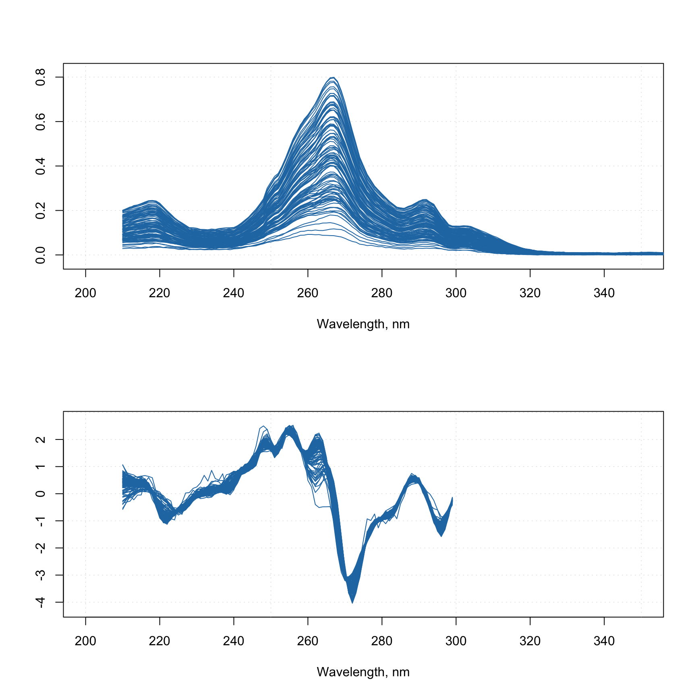

Combining methods together
From v.0.12.0 it is possible to combine several preprocessing methods and their parameters into one R object (list) and then apply them all at once in a correct order. This is particularly useful when you create a model based on a preprocessed calibration set and then want to apply the model to a new data. Which means the new data must be preprocessed in the same way as the data you used to create the model. The new functionality makes this easier.
First of all, you can see the list of preprocessing methods available for this feature as well as all necessary information about them if you run prep.list() as shown below:
prep.list()##
##
## List of available preprocessing methods:
##
##
## Standard normal variate normalization.
## ---------------
## name: 'snv'
## no parameters required
##
##
## Transform reflectance spectra to Kubelka-Munk units.
## ---------------
## name: 'ref2km'
## no parameters required
##
##
## Multiplicative scatter correction.
## ---------------
## name: 'msc'
## parameters:
## 'mspectrum': mean spectrum (if NULL will be computed based on data).
##
##
## Transformation of data values using math functions (log, sqrt, etc.).
## ---------------
## name: 'transform'
## parameters:
## 'fun': function to transform the values (e.g. 'log')
##
##
## Select user-defined variables (columns of dataset).
## ---------------
## name: 'varsel'
## parameters:
## 'var.ind': indices of variables (columns) to select.
##
##
## Normalization.
## ---------------
## name: 'norm'
## parameters:
## 'type': type of normalization ('area', 'sum', 'length', 'is', 'snv', 'pqn').
## 'col.ind': indices of columns (variables) for normalization to internal standard peak.
##
##
## Savitzky-Golay filter.
## ---------------
## name: 'savgol'
## parameters:
## 'width': width of the filter.
## 'porder': polynomial order.
## 'dorder': derivative order.
##
##
## Asymmetric least squares baseline correction.
## ---------------
## name: 'alsbasecorr'
## parameters:
## 'plambda': power of the penalty parameter (e.g. if plambda = 5, lambda = 10^5)
## 'p': assymetry ratio (should be between 0 and 1)
## 'max.niter': maximum number of iterations
##
##
## ---------------
## name: 'autoscale'
## parameters:
## 'center': a logical value or vector with numbers for centering.
## 'scale': a logical value or vector with numbers for weighting.
## 'max.cov': columns with coefficient of variation (in percent) below `max.cov` will not be scaledWhat you need to know is the name of the method and which parameters you can or want to provide (if you do not specify any parameters, default values will be used instead).
Let’s start with a simple example, where we want to take spectra from Simdata, and, first of all, apply Savitzky-Golay with filter width = 5, polynomial degree = 2 and derivative order = 1. Then we want to normalize them using SNV and get rid of all spectral values from 300 nm and above. Here is how to make a preprocessing object for this sequence:
data(simdata)
w <- simdata$wavelength
myprep <- list(
prep("savgol", list(width = 5, porder = 2, dorder = 1)),
prep("snv"),
prep("varsel", list(var.ind = w < 300))
)Now you can apply the whole sequence to any spectral data by using function employ.prep():
Xc <- simdata$spectra.c
attr(Xc, "xaxis.values") <- w
attr(Xc, "xaxis.name") <- "Wavelength, nm"
Xcp <- employ.prep(myprep, Xc)
par(mfrow = c(2, 1))
mdaplot(Xc, type = "l", xlim = c(200, 350))
mdaplot(Xcp, type = "l", xlim = c(200, 350))
Now let’s consider another example, where we have a calibration set and a test set. We need to create preprocessing sequence for the calibration set and, let’s say, we ended up with the following sequence:
- Reflectance to absorbance transformation
- MSC correction
- Normalization to unit area
- Removing the part with wavelength > 300 nm
We have two issues here. First of all, there is no implemented method which allows you to convert reflectance spectra to absorbance (log(1/R)). Second is that MSC relies on a mean spectrum, it must be computed for the calibration set and then be re-used when apply the correction to a new data. Here is how to solve both:
# define calibration and test sets
Xc <- simdata$spectra.c
Xt <- simdata$spectra.t
w <- simdata$wavelength
attr(Xt, "xaxis.values") <- attr(Xc, "xaxis.values") <- w
attr(Xt, "xaxis.name") <- attr(Xc, "xaxis.name") <- "Wavelength, nm"
# create a function for converting R to A
r2a <- function(data) return(log(1/abs(data)))
# compute mean spectrum for calibration set
ms <- apply(Xc, 2, mean)
# create a sequence of preprocessing methods
myprep <- list(
prep("r2a", method = r2a),
prep("msc", list(mspectrum = ms)),
prep("norm", list(type = "area")),
prep("varsel", list(var.ind = w < 300))
)
Xcp <- employ.prep(myprep, Xc)
Xtp <- employ.prep(myprep, Xt)
par(mfrow = c(2, 2))
mdaplot(Xc, type = "l", main = "Calibration set, raw")
mdaplot(Xt, type = "l", main = "Test set, raw")
mdaplot(Xcp, type = "l", main = "Calibration set, preprocessed")
mdaplot(Xtp, type = "l", main = "Test set, preprocessed")
In this example I use abs() inside the function r2a to get rid of occasional negative values in the spectra caused by some noise.
As one can see, you can always define your own method by creating a function, whose first argument should always be data — like I did it with r2a. This function should treat the data as a matrix and return a matrix of the same dimension as the original data. Other parameters are optional. In my example r2a does not have any additional parameters therefore I skipped this argument when calling the prep() function.
And, as you probably notices, I just provided preliminary computed mean spectrum for the "msc" method. Now the object myprep can be saved together with a model to RData file and be reused when is needed.